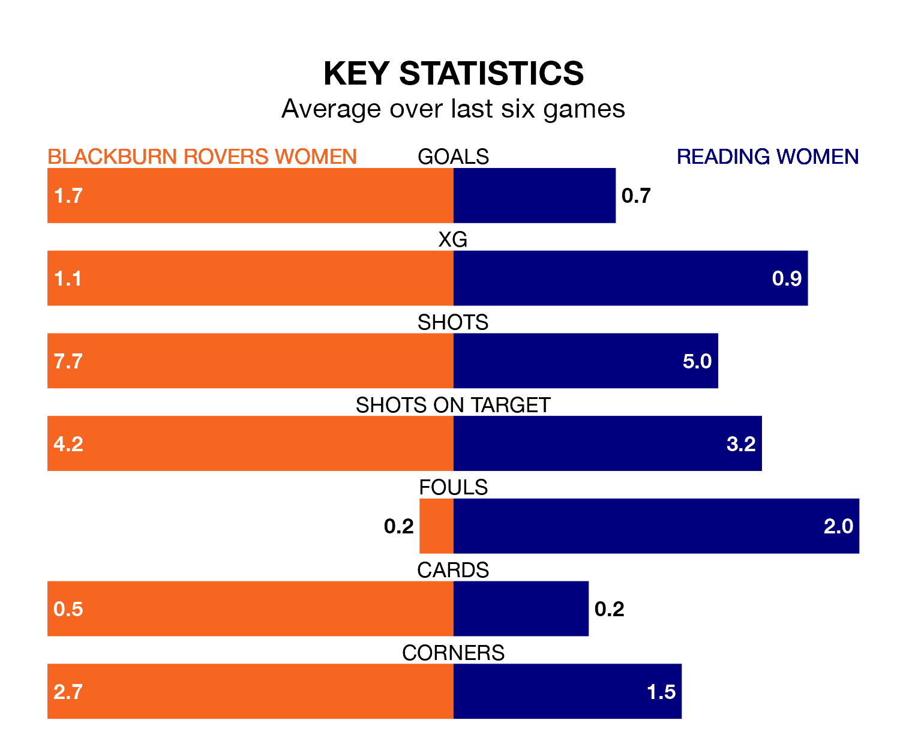

Reading Women make the journey to the Lancashire FA County Ground to play Blackburn Rovers Women on early Sunday looking to pick up points to end their four-game losing streak.
Reading's struggles have left them with just three points from their last six FA Women's Championship matches, while their opponents have earned 11 from a possible 18.
Reading are 10th in the table after 19 games, of which they have won four and drawn six, earning 18 points.
Blackburn Rovers are three places ahead of the Royals in seventh, with nine wins and two draws putting them on 29 points.
With Alexandra Brooks between the sticks, the hosts can rely on one of the league's safest pair of hands. She has kept six clean sheets in her 19 appearances this season in the FA Women's Championship.
In the away side's net, Emily Orman also has six clean sheets in 17 games. She has conceded a goal every 51 minutes, 30% more often than the 68 minutes between goals for Brooks.
With 17 goals in 19 games so far this season, Reading are the league's lowest scorers with 0.9 goals per game. And they are conceding more than average, letting in 37 goals at a rate of 1.9 per game.
Blackburn Rovers are also below average scorers, with 1.1 goals per game, compared to a league average of 1.4. They have conceded 1.4 goals per game.
Blackburn Rovers' last match was on March 31, a 4-1 win against Reading Women, with Megan Hornby (two), Hannah Coan and Lucy Shepherd getting the goals for Blackburn Rovers.
Reading lost 4-1 against Blackburn Rovers Women last time out, also on March 31, with Keira Flannery on the scoresheet.
Sunday's match will be refereed by Robert Madley, who is taking charge of her first FA Women's Championship game this season.
She is yet to oversee a match featuring either Blackburn Rovers or Reading this season.
Updated: 10:01 (UTC), 12/04/24